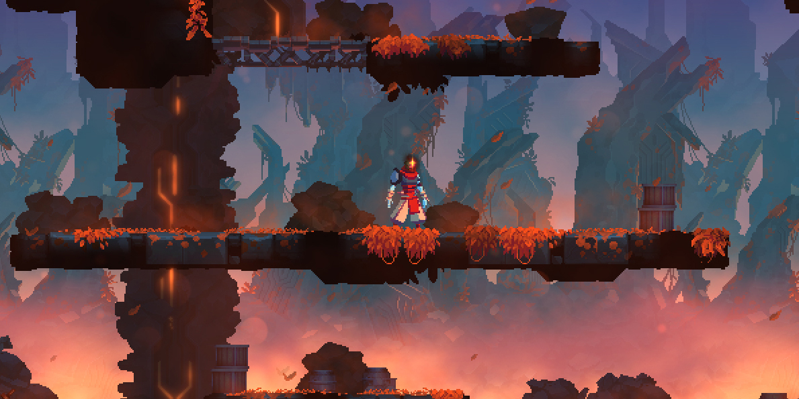
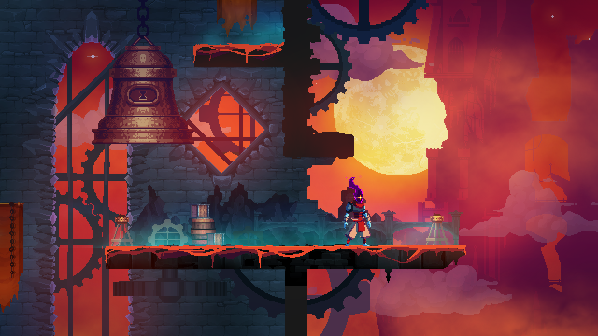

Dead Cells is a rogue-lite, metroidvania action-platformer.
Blog entries
BRURTAL UPDATE IS LIVE...
What’s new?
Cry me a river..
Duel in the clouds
A new boss has arrived…
Be polite and don’t let her wait around for you too much.
Explore and survive two new biomes:
The Slumbering Sanctuary will need to be awoken before it will allow you to pass. However, its inhabitants might not be too pleased to see you hanging around in their domain. Can’t really blame them though...Who likes to be disturbed during a quick nap?

The Slumbering Sanctuary
You will need to climb to the top of The Clock Tower to ring the Bell of the Awa… sorry, wrong game. So yeah, climb to the top, if you can, because it’s more booby-trapped than a Mayan temple, with little room to fight in and full of teleporting monsters. But, hey, the view is incredible.
Duel in the clouds!
The Cannibal is an agile and energetic duelyst. Take care that your own corpse doesn't end up in its guts.
Let me go!
The Golem! Quick tip: I know it’s tempting, but running away in panic may not be the best solution.
BETA AVAILABLE: UPDATE 4 IS READY FOR BUG TESTING.

The Clock Tower
New tier system:
We’ve updated the tier system to make your build choices more interesting. We’re trying to give you a real sense of control and strategy when you choose the tier that you want to upgrade. Each category; Brutality, Tactic and Survival will impact a different and disparate set of items. Some weapons and skills will cross both groups, this is where we hope things will get interesting.
As usual we’ll be counting on your feedback to help us balance out the new system. Bring us your ideas, you criticisms and don’t hesitate to let us know what you like.
These guardians of the temple don’t like when you get to intimate, but once you’re there, the hard part is done.
The backend usually consists of three parts: a server, an application, and a database. If you book a flight or buy concert tickets, you usually open a website and interact with the frontend. Once you’ve entered that information, the application stores it in a database that was created on a server. For sake of ease, just think about a database as a giant Excel spreadsheet on your computer, but your computer (server) is stored somewhere in Arizona.
All of that information stays on the server so when you log back into the application to print your tickets, all of the information is still there in your account.
We call a person that builds all of this technology to work together a backend developer. Backend technologies usually consist of languages like PHP, Ruby, Python, etc. To make them even easier to use they’re usually enhanced by frameworks like Ruby on Rails, Cake PHP, and Code Igniter that all make development faster and easier to collaborate on.
The backend usually consists of three parts: a server, an application, and a database. If you book a flight or buy concert tickets, you usually open a website and interact with the frontend. Once you’ve entered that information, the application stores it in a database that was created on a server. For sake of ease, just think about a database as a giant Excel spreadsheet on your computer, but your computer (server) is stored somewhere in Arizona.
All of that information stays on the server so when you log back into the application to print your tickets, all of the information is still there in your account.
We call a person that builds all of this technology to work together a backend developer. Backend technologies usually consist of languages like PHP, Ruby, Python, etc. To make them even easier to use they’re usually enhanced by frameworks like Ruby on Rails, Cake PHP, and Code Igniter that all make development faster and easier to collaborate on.
The backend usually consists of three parts: a server, an application, and a database. If you book a flight or buy concert tickets, you usually open a website and interact with the frontend. Once you’ve entered that information, the application stores it in a database that was created on a server. For sake of ease, just think about a database as a giant Excel spreadsheet on your computer, but your computer (server) is stored somewhere in Arizona.
All of that information stays on the server so when you log back into the application to print your tickets, all of the information is still there in your account.
We call a person that builds all of this technology to work together a backend developer. Backend technologies usually consist of languages like PHP, Ruby, Python, etc. To make them even easier to use they’re usually enhanced by frameworks like Ruby on Rails, Cake PHP, and Code Igniter that all make development faster and easier to collaborate on.
The backend usually consists of three parts: a server, an application, and a database. If you book a flight or buy concert tickets, you usually open a website and interact with the frontend. Once you’ve entered that information, the application stores it in a database that was created on a server. For sake of ease, just think about a database as a giant Excel spreadsheet on your computer, but your computer (server) is stored somewhere in Arizona.
All of that information stays on the server so when you log back into the application to print your tickets, all of the information is still there in your account.
We call a person that builds all of this technology to work together a backend developer. Backend technologies usually consist of languages like PHP, Ruby, Python, etc. To make them even easier to use they’re usually enhanced by frameworks like Ruby on Rails, Cake PHP, and Code Igniter that all make development faster and easier to collaborate on.
Ruby is a language of careful balance. Its creator, Yukihiro Matsumoto, blended parts of his favorite languages (Perl, Smalltalk, Eiffel, Ada, and Lisp) to form a new language that balanced functional programming with imperative programming.
He has often said that he is “trying to make Ruby natural, not simple,” in a way that mirrors life.
Building on this, he adds:
Ruby is simple in appearance, but is very complex inside, just like our human body.
This is a small Ruby tutorial that should take no more than 20 minutes to complete. It makes the assumption that you already have Ruby installed. (If you do not have Ruby on your computer install it before you get started.) Tutorial